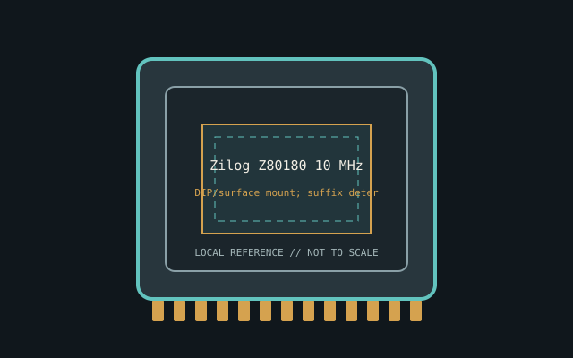

[ INDIVIDUAL CPU COMPONENT ]
Zilog Z80180 10 MHz
Z180 8-bit CPU; Z80-compatible core, MMU, DMA, serial and timers Model-specific record; confirm the complete part marking before installation.

IDENTIFICATION: Zilog Z80180 10 MHz. Product name alone does not establish package, stepping, voltage or firmware compatibility.
Verified model specifications
| Catalog path | Other → Zilog processors |
|---|---|
| Model and compute | Z180 8-bit CPU; Z80-compatible core, MMU, DMA, serial and timers |
| Package / socket | DIP/surface mount; suffix determines pinout |
| Compatibility | Not pin-compatible drop-in Z80; Z180 bus/peripherals required |
| Stepping and variants | Z80180/HD64180 derivatives vary in package/timing |
Compatibility and service
- Not pin-compatible drop-in Z80; Z180 bus/peripherals required
- Z80180/HD64180 derivatives vary in package/timing
- Use Z180 manual; preserve firmware/board schematic
- Confirm board manual, exact CPU support list, firmware, voltage/power, memory and cooling before use; never force a package.
Service & archival notes
Use Z180 manual; preserve firmware/board schematic
Photograph package, markings, contacts and date/lot codes before repair. Log host board, BIOS/microcode, memory, cooler, condition, provenance and source revision.
Sources & further reading
- Zilog Z8018x Family MPU User ManualManufacturer instruction/timing reference; check exact suffix.
- Zilog documentationManufacturer datasheets and archive.
Manufacturer documents take precedence. Family-level references may not resolve every stepping; verify the marking and motherboard CPU list.